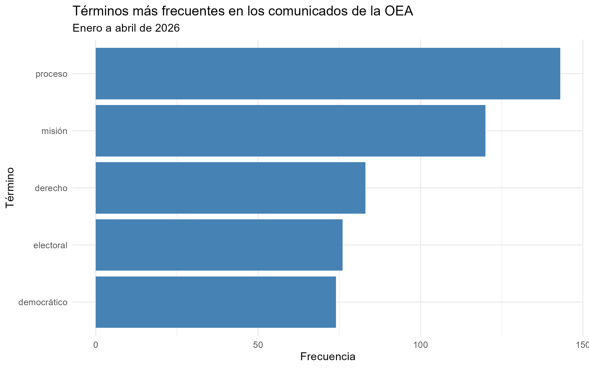

# Cargo las librerías necesarias
library(here)
library(tidyverse)
# Leo el archivo procesado generado por processing.R
procesado <- read_rds(here("TP2", "output", "processed_text.rds"))
# Calculo algunas estadísticas descriptivas del corpus
n_tokens <- nrow(procesado)
n_comunicados <- procesado |> distinct(id) |> nrow()Análisis de comunicados de prensa de la OEA
Trabajo Práctico 2 - Manejo y Visualización de Datos
Introducción
Este informe corresponde al Trabajo Práctico 2 de la materia Manejo y Visualización de Datos. El objetivo es aplicar técnicas de web scraping y procesamiento de lenguaje natural (NLP) sobre los comunicados de prensa publicados por la Organización de los Estados Americanos (OEA) entre enero y abril de 2026.
El análisis busca identificar qué temáticas predominan en la comunicación institucional de la OEA durante ese período, a partir de la frecuencia de aparición de términos relevantes en los comunicados.
Estructura del proyecto
El proyecto está organizado en la carpeta TP2/ con la siguiente estructura:
data/: archivos HTML descargados del sitio de la OEA y la tablacomunicados_oea.rdscon los comunicados extraídos.scripts/: los tres scripts de R que ejecutan el pipeline.scraping_oea.R: descarga los comunicados del sitio oficial.processing.R: limpia el texto y lematiza conudpipe.metrics_figures.R: calcula frecuencias y genera la figura final.
output/: resultados procesados (processed_text.rds) y la figura (frecuencia_terminos.png).notebooks/: este informe.
Todas las rutas del proyecto se manejan con la librería here, lo que permite que los scripts sean reproducibles en cualquier computadora.
Metodología
Scraping
El script scraping_oea.R descarga la lista mensual de comunicados desde el sitio oficial de la OEA (www.oas.org) para los meses de enero a abril de 2026. Para cada mes se extraen los títulos y las URLs de los comunicados con rvest, y luego se visita cada URL individual para obtener el cuerpo del texto.
Se respetó el Crawl-delay de 3 segundos indicado en el archivo robots.txt del sitio, usando Sys.sleep(3) entre cada request.
El resultado final es una tabla con tres columnas: id, titulo y cuerpo, con un total de 76 comunicados.
Procesamiento
El script processing.R realiza las siguientes operaciones sobre el cuerpo de los comunicados:
- Limpieza de saltos de línea, comillas, signos de puntuación y dígitos.
- Lematización y etiquetado POS usando el modelo
spanishdeudpipe. - Filtrado para conservar únicamente sustantivos, verbos y adjetivos.
- Remoción de stopwords en español y en inglés.
- Eliminación de tokens de menos de 3 caracteres.
El resultado se guarda en processed_text.rds, una tabla en formato tidy (una fila por token).
Visualización
El script metrics_figures.R cuenta la frecuencia de cada lemma en el corpus completo, selecciona los 5 términos más frecuentes y genera una figura de barras con ggplot2. La figura final se guarda como frecuencia_terminos.png.
Resultados
El corpus procesado contiene 11566 tokens distribuidos en 67 comunicados de la OEA del período enero–abril 2026.
A continuación se muestran los 5 términos más frecuentes:

Interpretación
Los 5 términos más frecuentes del corpus son: proceso, misión, derecho, electoral y democrático. Esta selección refleja con mucha claridad los ejes centrales del accionar institucional de la OEA durante el primer cuatrimestre de 2026.
Las palabras electoral, misión y proceso aparecen fuertemente asociadas a las Misiones de Observación Electoral (MOE), una de las actividades más visibles de la organización. Estas misiones supervisan elecciones en los países miembros y emiten comunicados de prensa antes, durante y después de cada proceso electoral.
Los términos derecho y democrático, por su parte, remiten a los dos grandes pilares fundacionales de la OEA según la Carta Democrática Interamericana: la protección de los derechos humanos y la defensa de la democracia representativa.
En conjunto, estos 5 términos pintan un mapa coherente de la agenda institucional del organismo durante el período analizado, dominada por la observación electoral y la promoción de los derechos humanos y la gobernabilidad democrática en la región.
Conclusión
El análisis permitió aplicar de forma integrada técnicas de web scraping (con rvest y robotstxt), procesamiento de lenguaje natural (con udpipe y stopwords) y visualización de datos (con ggplot2) sobre un corpus real de comunicados institucionales.
La estructura modular del proyecto, con scripts separados para cada etapa del pipeline y rutas relativas vía here , garantiza que el análisis sea reproducirble y pueda volver a ejecutarse en otra computadora sin ningún cambio en el código.